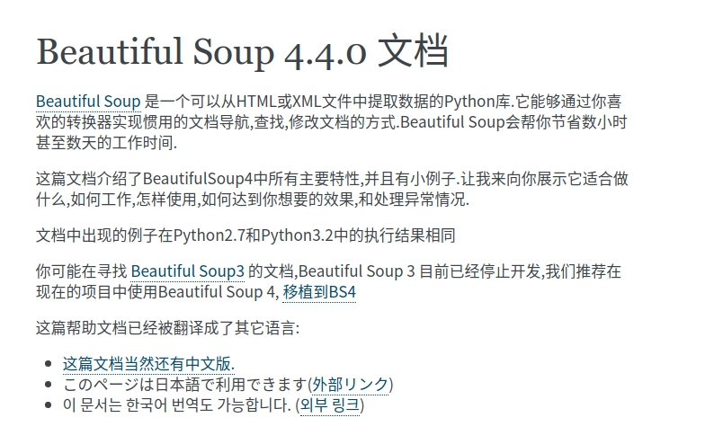

网络学习资源
目录
Linux
Shell
- 《sed and awk 101 hacks》
- 《高级shell脚本编程指南》
- Bash Pitfalls
- 简洁的 Bash Programming 技巧
- The Unix School
- One-Liners Explained
Python
Python frameworks, libraries, software and resources - 7w stars
- 《python爬虫教程，带你从零到一》- 快速入门
- 《爬虫教程》- 详细
- 在线编辑python
- Django 优秀资源大全
- Requests



Go
Git


Gitbook
Ansible
Prometheus
Docker
- 10张图带你深入理解Docker容器和镜像 - 原文
- Marathon - A container orchestration platform for Mesos and DC/OS
- kubernetes - 生产级别的容器编排系统，自动化的容器部署、扩展和管理
微服务
Spring Boot

Node
- cnpm - Private npm registry and web for Company
- 《Node.js区块链开发》
Tmux
.tmux 经典配置
https://github.com/gpakosz/.tmux
VIM
- Vimrc 经典配置
https://github.com/rafi/vim-config

Hexo
主题
Vuejs
私有云
HTTPS
etcd
FrontEnd
工具
前端 UI 组件库
Ant Design -
antd是基于 Ant Design 设计体系的 React UI 组件库，主要用于研发企业级中后台产品Element - 一套为开发者、设计师和产品经理准备的基于 Vue 2.0 的桌面端组件库
- Bootstrap - Bootstrap is an open source toolkit for developing with HTML, CSS, and JS. Quickly prototype your ideas or build your entire app with our Sass variables and mixins, responsive grid system, extensive prebuilt components, and powerful plugins built on jQuery
前端工具库
- React - A JavaScript library for building user interfaces - 用于构建用户界面的 JavaScript 库
- Vue -The Progressive JavaScript Framework - 渐进式 JavaScript 框架
- Angulars - One framework.Mobile & desktop